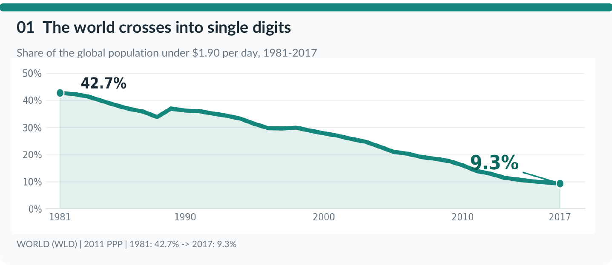
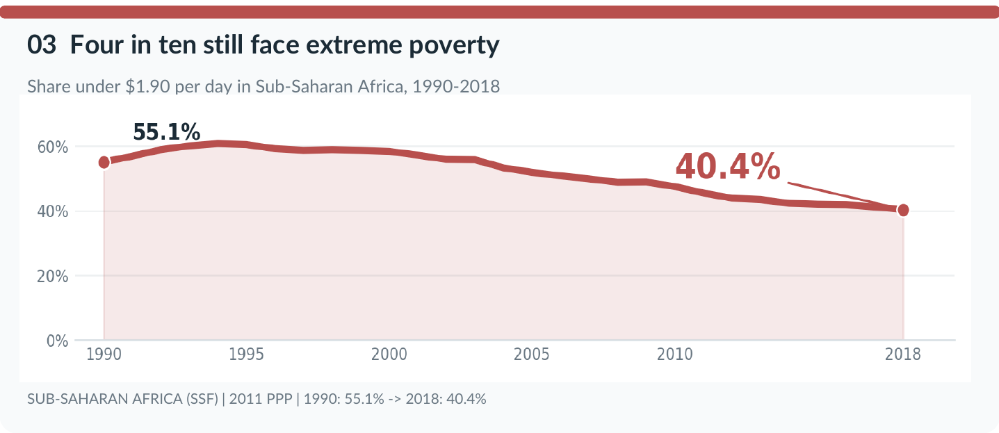

Proposition: Extreme poverty is becoming a problem of the past
FOR the Proposition

Design Decisions and Rationale:
- [+2] Full 1981–2017 world time series. We plotted every available year for the world aggregate with no interpolation or invented years, so the decline is genuine and checkable against the source.
- [+1] Zero-baseline line with a soft area fill. Starting the y-axis at 0% keeps the drop proportionally honest, and the filled area makes the shrinking share feel tangible.
- [+1] Direct start/end labels (42.7% → 9.3%). Large annotations at the endpoints let readers grasp the magnitude instantly without reading the axis.
- [-1] Headline framed around the milestone, not the people still poor. "Crosses into single digits" celebrates the percentage and hides that 9.3% is still roughly 700 million people.
AGAINST the Proposition

Design Decisions and Rationale:
- [-1] Focus on Sub-Saharan Africa instead of the global mean. Choosing the region with the most persistent poverty reframes the question from "is the world improving?" to "who is being left behind?"
- [+2] Keep the historical decline and a zero baseline. We did not truncate the axis or hide the 1990s; the real (slower) improvement is visible, which makes the chart more credible.
- [-0.5] Oversized red 40.4% label. The largest, most saturated element is the remaining hardship, steering attention to the end value rather than the trend.
- [+1] Same $1.90 threshold as the supporting chart. Using an identical definition makes the two charts directly comparable, so the disagreement comes from emphasis, not redefined terms.
Final Reflection
[DRAFT — edit in your group's voice] The most striking part of this project was that we never needed to fabricate or distort data to tell two opposing stories. Both visualizations use the same World Bank file, the same $1.90 threshold, and honest zero baselines. The persuasion came almost entirely from scope (world vs. one region), framing (headline and title wording), and emphasis (which number is largest and most saturated). Building the "for" chart was straightforward because the global trend is dramatic; the "against" chart was harder because we had to resist techniques like truncating the axis, which would have exaggerated the stagnation but been easy to catch.
We were surprised by how much a single choice of aggregation changed the conclusion. The global average is pulled down sharply by East Asia, while Sub-Saharan Africa declined slowly enough that the number of people in extreme poverty there barely fell. Neither chart is false, yet a reader who sees only one walks away with a very different belief about the world.
We now think of ethical visualization as being transparent about the choices that shape the conclusion, not just avoiding false numbers. A persuasive choice is acceptable when a reader could discover it from the chart itself (labeled region, labeled threshold, clear source) and would still find the claim reasonable. It becomes misleading when the choice is hidden or when it implies a broader claim than the data supports, for example presenting one region as "the world" or quietly switching poverty lines. The boundary is blurry, which is why disclosure matters more than any single rule.